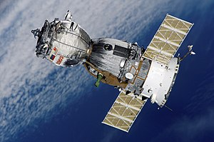
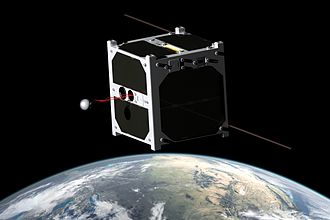

A satellite is an object that has been intentionally placed into orbit. These objects are called artificial satellites to distinguish them from natural satellites such as Earth's Moon.
On 4 October 1957 the Soviet Union launched the world's first artificial satellite, Sputnik 1. Since then, about 8,900 satellites from more than 40 countries have been launched. According to a 2018 estimate, some 5,000 remain in orbit. Of those about 1,900 were operational, while the rest have lived out their useful lives and become space debris. Approximately 63% of operational satellites are in low-Earth orbit, 6% are in medium-Earth orbit (at 20,000 km), 29% are in geostationary orbit (at 36,000 km) and the remaining 2% are in elliptic orbit. A few large space stations have been launched in parts and assembled in orbit. Over a dozen space probes have been placed into orbit around other bodies and become artificial satellites of the Moon, Mercury, Venus, Mars, Jupiter, Saturn, a few asteroids, a comet and the Sun.
 Satellites are used for many purposes. Among several other applications, they can be used to make star maps and maps of planetary surfaces, and also take pictures of planets they are launched into. Common types include military and civilian Earth observation satellites, communications satellites, navigation satellites, weather satellites, and space telescopes. Space stations and human spacecraft in orbit are also satellites.
Satellites are used for many purposes. Among several other applications, they can be used to make star maps and maps of planetary surfaces, and also take pictures of planets they are launched into. Common types include military and civilian Earth observation satellites, communications satellites, navigation satellites, weather satellites, and space telescopes. Space stations and human spacecraft in orbit are also satellites.
Satellites can operate by themselves or as part of a larger system, a satellite formation or satellite constellation.
Satellite orbits vary greatly, depending on the purpose of the satellite, and are classified in a number of ways. Well-known (overlapping) classes include low Earth orbit, polar orbit, and geostationary orbit.
History of Satellites
The first published mathematical study of the possibility of an artificial satellite was Newton's cannonball, a thought experiment in A Treatise of the System of the World by Isaac Newton (1687). The first fictional depiction of a satellite being launched into orbit was a short story by Edward Everett Hale, The Brick Moon. The idea surfaced again in Jules Verne's The Begum's Fortune (1879).

In 1903, Konstantin Tsiolkovsky (1857–1935) published Exploring Space Using Jet Propulsion Devices, which is the first academic treatise on the use of rocketry to launch spacecraft. He calculated the orbital speed required for a minimal orbit, and that a multi-stage rocket fueled by liquid propellants could achieve this.
In 1928, Herman Potočnik (1892–1929) published his sole book, The Problem of Space Travel – The Rocket Motor. He described the use of orbiting spacecraft for observation of the ground and described how the special conditions of space could be useful for scientific experiments.
In a 1945 Wireless World article, the English science fiction writer Arthur C. Clarke described in detail the possible use of communications satellites for mass communications.[5] He suggested that three geostationary satellites would provide coverage over the entire planet.
In May 1946, the United States Air Force's Project RAND released the Preliminary Design of an Experimental World-Circling Spaceship, which stated that "A satellite vehicle with appropriate instrumentation can be expected to be one of the most potent scientific tools of the Twentieth Century."[6] The United States had been considering launching orbital satellites since 1945 under the Bureau of Aeronautics of the United States Navy. Project RAND eventually released the report, but considered the satellite to be a tool for science, politics, and propaganda, rather than a potential military weapon.In February 1954 Project RAND released "Scientific Uses for a Satellite Vehicle," written by R.R. Carhart.[8] This expanded on potential scientific uses for satellite vehicles and was followed in June 1955 with "The Scientific Use of an Artificial Satellite," by H.K. Kallmann and W.W. Kellogg.
In the context of activities planned for the International Geophysical Year (1957–58), the White House announced on 29 July 1955 that the U.S. intended to launch satellites by the spring of 1958. This became known as Project Vanguard. On 31 July, the Soviets announced that they intended to launch a satellite by the fall of 1957.
The first artificial satellite was Sputnik 1, launched by the Soviet Union on 4 October 1957 under the Sputnik program, with Sergei Korolev as chief designer. Sputnik 1 helped to identify the density of high atmospheric layers through measurement of its orbital change and provided data on radio-signal distribution in the ionosphere. The unanticipated announcement of Sputnik 1's success precipitated the Sputnik crisis in the United States and ignited the so-called Space Race within the Cold War.

Sputnik 2 was launched on 3 November 1957 and carried the first living passenger into orbit, a dog named Laika.
In early 1955, following pressure by the American Rocket Society, the National Science Foundation, and the International Geophysical Year, the Army and Navy were working on Project Orbiter with two competing programs. The army used the Jupiter C rocket, while the civilian/Navy program used the Vanguard rocket to launch a satellite. Explorer 1 became the United States' first artificial satellite on 31 January 1958.
In June 1961, three-and-a-half years after the launch of Sputnik 1, the United States Space Surveillance Network cataloged 115 Earth-orbiting satellites.
Early satellites were constructed to unique designs. With advancements in technology, multiple satellites began to be built on single model platforms called satellite buses. The first standardized satellite bus design was the HS-333 geosynchronous (GEO) communication satellite launched in 1972.
Currently the largest artificial satellite ever is the International Space Station.
Click here to know more on the history of satellites
End Life of Satellites
When satellites reach the end of their mission (this normally occurs within 3 or 4 years after launch), satellite operators have the option of de-orbiting the satellite, leaving the satellite in its current orbit or moving the satellite to a graveyard orbit. Historically, due to budgetary constraints at the beginning of satellite missions, satellites were rarely designed to be de-orbited. One example of this practice is the satellite Vanguard 1. Launched in 1958, Vanguard 1, the 4th artificial satellite put in Geocentric orbit, was still in orbit as of March 2015, as well as the upper stage of its launch rocket.
Instead of being de-orbited, most satellites are either left in their current orbit or moved to a graveyard orbit.[22] As of 2002, the FCC requires all geostationary satellites to commit to moving to a graveyard orbit at the end of their operational life prior to launch. In cases of uncontrolled de-orbiting, the major variable is the solar flux, and the minor variables the components and form factors of the satellite itself, and the gravitational perturbations generated by the Sun and the Moon (as well as those exercised by large mountain ranges, whether above or below sea level). The nominal breakup altitude due to aerodynamic forces and temperatures is 78 km, with a range between 72 and 84 km. Solar panels, however, are destroyed before any other component at altitudes between 90 and 95 km.
F.A.Q
- What is a satellite?
Natural Satellites:
Natural Satellites are small astronomical bodies that orbit a planet.
For e.g., the Moon is a natural satellite to EarthArtificial Satellites:
Artificial Satellites are man-made objects that have been placed into the orbit of a planet.
For e.g., MySat is an artificial satellite.- Why do we need satellites?
- What is a CubeSat?
- What is the purpose of MySat?
- Who were the people who made this possible?
- Where were the funds for this project obtained from?
- What is the lifetime of this mission?
Satellies are objects that orbit a planet.
They could either be natural or artificial.